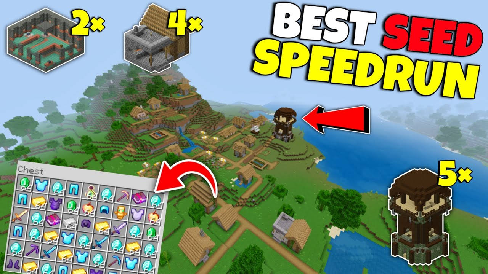
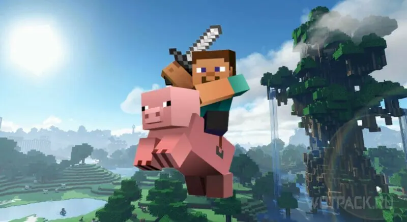
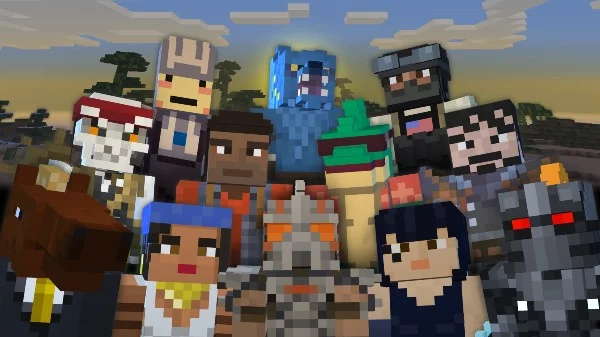
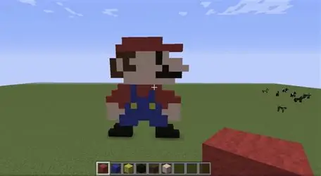

Rekordy
random seed speedrun

Na prvím místě je lowkey s časem 6minut, 56 sekund a 720 milisekund
Získání všech achivemntů
Na prvním místě je Feinberg s časem 2 hodiny 13 minut a 45 sekund
Nedelší cesta na praseti

Nejdelší cesta na praseti trvala 8 hodin a 2 minuty v realném čase. Zapsal ho hráč RusselBerry v roce 2017 a ujel 21 461 310 bloků.
Největší počet hráčů online na jednom serveru

Největší počet hráčů na jednom servu bylo 34 435 lidí.
Největší pixel art

Největší pixel art udělaný v minecrafu měří 1 128 960.

Největší minecraft svět
Největší minecraftový svět měl velikost až 4 petabajtů (což je zhruba 4 000 000 gigabajtů).